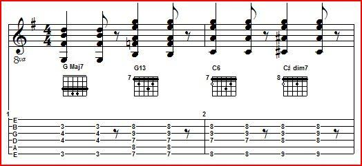

Lesson 14
Notes to Lesson 14
Mickey's introduced us to "Vamps" in Lesson 13 and with all of those exercises using Group B chords, we must be feeling a little "vamped out!" OK, let's play some vamps using our new old friends, Group A chords.
Mickey knows that a challenge stimulates interest, so he gives us four new chord forms: 27, 28, 29, and 30. In Lesson 1 I showed them and discussed each one at that time. Here's some additional info or review:
Form 27: This is a movable form of one of the most common chord forms in beginning guitar instruction manuals, an open position D7. By the addition of a fingered note on the 4th string we can move this form up and down the fretboard. If need be, we can extend our first finger to the 5th string as well for an additional bass note.
Form 28: This chord form gives us an additional Maj6 chord form. As an interesting bit of trivia, fingerstyle guitar giant Chet Atkins was said in an interview that this chord seemed to give him more problems to jump into than most other forms. Some guitarists are able to finger a common C chord, and use the 2nd finger as a 2-string barre to convert it to a C Maj6. Also, the adjacent note on the 6th string can be played as an additional bass note. Note that this chord is really is a 1st inversion A minor triad as it only has three different notes and is missing the G or 5th to make it a 4-note Major 6 chord. We noted that on our Form 17, also a 3-note Major 6. But don't worry, we hardly miss the 5th!
Form 29: Mickey's course introduced me to this interesting and unique 13 chord form. I had a little bit of difficulty with it, and with a little practicing it alone and in Mickey's exercises, it became much more comfortable. Note that this chord form is a 1st inversion, or the lowest note is the 3rd of the chord. That makes this form a natural as a transition chord in a I - IV progression. For example, let's play G - G7 - C - C min (from our vamps of Lesson 13). Let's substitute: G Maj7 - G13 - C Maj6 - C# dim7. If we use a full barre for all the chords, it becomes a really easy and great sounding progression. Note the chord diagrams in this illustration are not quite Mickey's fingerings, but they work so nicely:

I - IV Progression
In Measure 1, we play a Form 2 G Maj7 chord. But let's alter our fingering just a little. In fact, this is a very common fingering and if you use your 4th finger on the 5th fret, 5th string (a D note), we have a 6-string version of a Major 7 chord. For Beat 3 of that measure, we slide the barre to the 7th fret. Finding the other notes isn't so bad as we "cheated" with our barre as an anchor.
To make the C Maj6 (the IV chord in G), all we have to do is just move the 2nd finger from the 5th string to the 6th string. At Beat 3 of Measure 2, we slide everything up 1 fret and we can either leave our 4th finger on the third string or note it with the third finger. Once again, having the anchor notes makes this so easy. I've made a TEF of this exercise and you can download it with this lesson's TEF's.
Form 30: Mickey gives this form in the open position, but like Form 27, it is movable as well and many times it resolves into a Form 27 chord or from one. It also frequently resolves into Form 12. The next illustration gives those examples:
Some Common Progressions with Form 30
Mickey calls Form 30 an "11" chord, and that works great for this course. More often than not, it will be thought of as 7 sus4 chord. Sus is the abbreviation for suspended. The 4th note from the root is "suspended" above, waiting to resolve to the 3rd of the chord. To review, the 3rd of the chord is the note that gives the chord its flavor, major or minor. So a 7sus4 is neither major nor minor and can resolve to either. Now you can understand why Mickey probably chose to call this important form an "11". From time to time you'll also see this chord referred to as a minor11 chord.
Measure 1 of the Form 30 illustration shows an E11 (or E7sus4) resolving to an E7 chord, which is a Form 27. Measure 2 flip-flops these forms with an E7 (Form 27) going to an Eb11 (or Eb7sus4). If this seems familiar, we studied it as part of the "Moon Glow Progression" in an earlier lesson. Measure 3 gives our now familiar Form 30 resolving into an E min7 chord.
About our exercises:
With knowledge comes responsibilities. Mickey is no longer asking us to spend a week in a "prime" key and then the next week transposing. With our experience both with chords and transposing, we're getting new exercises (and in this case, new chords) and we're also expected to transpose them to as many keys as possible. This time Mickey freely admits that we won't be able to play all exercises in all keys. Using the limitations of my guitar and maybe some slight modifications as I did in previous lessons, I've included all the playable TEF's. I encourage you to experiment to see if additional keys can be played on your guitar. You be the judge.
Now if you're just "itching" for an assignment:
Try transposing as many of these exercises as possible to the missing guitar friendly keys: D, A, and E. As always, if you send me your work to share with others, I'll put it in a special distribution and add it to the lesson. Don't forget to tell me if you want credit for your work.
And if you just can't get enough!!!:
Try your hand at writing another Vamp using Group A chords and possibly our new forms. Make a TEF out of it as we did in Lesson 13. And of course, if you want to share, send it to me. I've included one original vamp I wrote as "practicing what I preached". Probably the most remarkable attribute of this TEF is that I resisted the urge to give it a name like "Sheeza Vamp". By now you should be able to name the chords so I only gave Chord Diagrams. Let's analyze what we have:
Measures 1 and 2: Our turnaround that represents our recurring chord progression. Note that I'm not including the 1st string on those chord forms we normally use the 1st string on. More on this later.
Measures 3 and 4: Repeat of Measures 1 and 2.
Measures 5 and 6: Our obligatory I - IV progression. Note this is a slight modification of the Form 29 G13 chord example from the beginning of these notes.
Measures 7 and 8: Repeat of Measures 1 and 2 with a slight modification: this time we included the 1st string in Measure 8.
Measures 9 through 16: This is a repeat of Measures 1 through 6 with Measures 15 and 16 being a I - V - I progression.
Measure 16: Note the F#7 as the last chord that's a lead in to take us to ...... THE BRIDGE. And that, as they use to say on television, is a scene from a coming attraction.
Just keep it FUN!